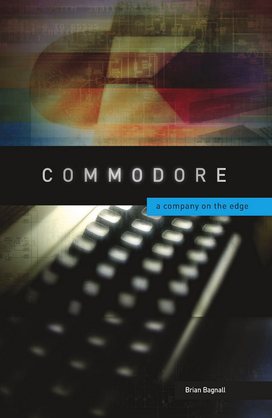

<!doctype html>
<html lang="en">
	<head>
		<meta charset="utf-8">
		<meta name="viewport" content="width=device-width, initial-scale=1.0, maximum-scale=1.0, user-scalable=no">

		<title>reveal.js</title>

		<link rel="stylesheet" href="dist/reset.css">
		<link rel="stylesheet" href="dist/reveal.css">
		<link rel="stylesheet" href="dist/theme/night.css">
		<link rel="stylesheet" href="css/custom.css">

		<!-- Theme used for syntax highlighted code -->
		<link rel="stylesheet" href="plugin/highlight/monokai.css">
	</head>
	<body>
		<div class="reveal">
			<div class="slides">
				<section data-markdown data-separator-vertical="^--$">
					<script type="text/template">
						# Title

						Retrosfera vol 7
						---
						# About me
						---
						<!-- .element class="img-reduce"-->

						Liczba wydanych gier dla C64 wg Lemon64.com<!-- .element class="fragment"-->
						--
						<!-- .element class="img-reduce"-->
						---
						Skąd wzięły się<!-- .element class="r-fit-text"-->

						pierwsze gry na C64?<!-- .element class="r-fit-text"-->
						--
						<div class="r-hstack gap1">
							
							<ul class="no-ticks">
								<li>Brian Bagnall</li>
								<li><em>Commodore: a company on the edge</em></li>
								<li>4 tomy</li>
								<li>koniecznie przeczytać</li>
								<li>(jeśli ktoś jeszcze nie zna)</li>
							</ul>
						</div>
						--
						<!-- .element class="img-reduce"-->
						
						Commodore VIC 20, 1981
						--
						
						--
						
						--
						
						--
						
						--
						
						---
						Rok 1987 dla Commodore 64...
						<!-- .element class="img-reduce"-->
						---
						Indie Games<!-- .element class="r-fit-text"-->
						--
						Lasse Öorni "Cadaver"

						<!-- .element class="img-reduce"-->
						--
						Richard Bayliss / The New Dimension

						<!-- .element class="img-reduce"-->
						--
						Jimbo

						<!-- .element class="img-reduce"-->
						---
						Cross development
						--
						Co to jest
						--
						Mój warsztat
						--
						A jak było kiedyś?
					</script>
				</section>
			</div>
		</div>

		<script src="dist/reveal.js"></script>
		<script src="plugin/notes/notes.js"></script>
		<script src="plugin/markdown/markdown.js"></script>
		<script src="plugin/highlight/highlight.js"></script>
		<script>
			// More info about initialization & config:
			// - https://revealjs.com/initialization/
			// - https://revealjs.com/config/
			Reveal.initialize({
				hash: true,
				width: 1200,
				height: 700,
				slideNumber: 'c/t',
				autoPlayMedia: true,

				// Learn about plugins: https://revealjs.com/plugins/
				plugins: [ RevealMarkdown, RevealHighlight, RevealNotes ]
			});
		</script>
	</body>
</html>
